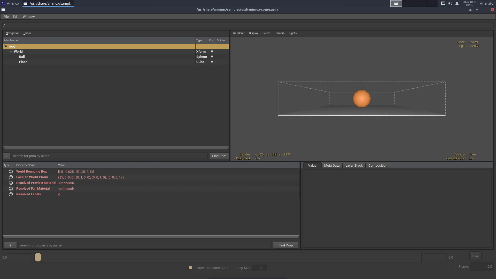

Studios pass work between many programs. These open formats, most of them from the Academy Software Foundation, make that possible. Blender reads and writes most of them; Animux adds the command-line tools to check and convert them. Who made each format and why, in one card each: Studio formats.
| Format | Holds | File | Blender |
|---|---|---|---|
| OpenUSD | whole scenes: objects, materials, lights, cameras, layers | .usd .usda .usdc .usdz |
File → Import/Export → USD |
| Alembic | baked moving geometry (animation caches) | .abc |
File → Import/Export → Alembic |
| OpenEXR | high-quality images, many layers (passes) | .exr |
Output file format OpenEXR |
| OpenColorIO | colour spaces and looks | config.ocio |
Blender uses OCIO internally |
| OpenVDB | volumes: smoke, fire, clouds | .vdb |
Add → Volume → Import OpenVDB |
| OSL | custom materials as code | .osl |
Cycles → Script node (CPU) |
| MaterialX | materials shared between programs | .mtlx |
via USD export |
OpenUSD#
Universal Scene Description, made by Pixar, is the scene format of modern pipelines (Blender, Houdini, Maya, Omniverse, Unreal).
usdview /usr/share/animux/samples/usd/animux-scene.usda # look at a scene
usdcat scene.usda -o scene.usdc # text → binary
usdcat scene.usdc # print a binary file as text
usdtree scene.usda # list what is inside
usdchecker scene.usda # check for errors
usdzip -a scene.usdz scene.usda # package for AR (iPhone)


Python: animux-vfx-python -c "from pxr import Usd; print(Usd.Stage.Open('scene.usda').GetRootLayer().ExportToString())".
Alembic#
abcls -r /usr/share/animux/samples/alembic/animux-cube.abc # list objects
abctree file.abc # show the hierarchy
abcecho file.abc # print details
The sample is a cube spinning over 24 frames. Import it in Blender with File → Import → Alembic.
OpenEXR and OpenImageIO#
EXR keeps real light values (brighter than white) and several passes in one file: diffuse, specular, depth, object IDs. Render to EXR, then grade and comp.
exrheader render.exr # what is inside (channels, compression)
oiiotool render.exr -o render.png # convert
oiiotool render.exr --resize 50% -o half.exr
oiiotool a.exr b.exr --over -o comp.exr # put a over b
iinfo -v render.exr
View EXR files with DJV.
OpenColorIO#
OCIO describes colour spaces (sRGB, ACEScg, Filmic/AgX…) so every program shows the same colours.
ociocheck --iconfig /usr/share/animux/samples/ocio/config.ocio
Point programs to a config with the OCIO environment variable: OCIO=/path/config.ocio krita.
OpenVDB#
vdb_print -l smoke.vdb
Blender writes VDB files from smoke simulations (Physics → Fluid → Cache → Format: OpenVDB).
OSL (Open Shading Language)#
oslc stripes.osl # compile to stripes.oso
oslinfo stripes.oso # list its parameters
In Blender: Cycles, Device: CPU, tick Open Shading Language in Render properties, then add a Script node in the shader editor.
Animux VFX Python#
animux-vfx-python is a Python 3.11 with all these libraries installed together, so scripts work without setup:
| Module | Import as |
|---|---|
| OpenUSD (usd-core 26.11) | from pxr import Usd, UsdGeom |
| OpenImageIO 3.2 | import OpenImageIO as oiio |
| OpenEXR 3.5 | import OpenEXR |
| OpenColorIO 2.6 | import PyOpenColorIO as ocio |
| MaterialX 1.39 | import MaterialX |
| Mitsuba 3.9 | import mitsuba as mi |
| LuxCoreRender 2.11 | import pyluxcore |
| NumPy 2.4 | import numpy |
It lives in /opt/animux/vfx-env and is managed by the animux-vfx-python package; do not install into it. For extra libraries make your own environment on top of it: /opt/animux/vfx-env/bin/python -m venv --system-site-packages ~/myenv, then ~/myenv/bin/pip install name.